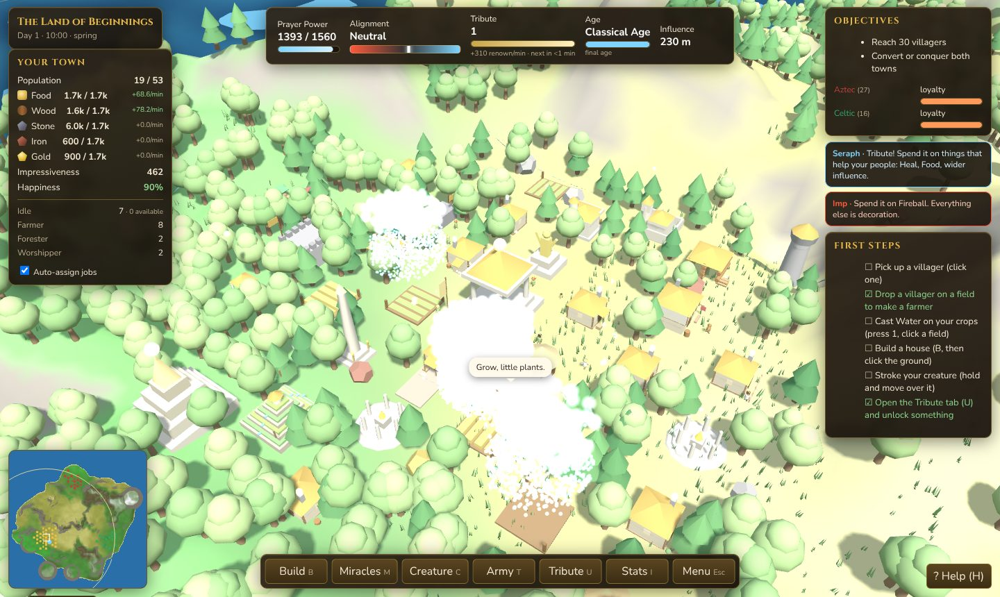

DOMINION
Rule a tribe from above. Nurture or terrorise your villagers, raise a colossal creature, and win the island by awe or by war.
Original code and procedural art. No external assets, no server, no tracking.

What it is
A god game in the spirit of the classic god-sim genre. You are an invisible deity with a giant hand, a tribe of villagers who get on with their lives whether or not you help, and a creature you raise by example.
You never control a villager directly. You pick them up and put them somewhere, you make it rain on their crops, you build where there is room, and you decide whether the neighbouring tribes are won over or flattened. Everything you do pushes you towards benevolence or malevolence, and the world, your temple, your hand and your creature all change to match.
What makes it tick
The hand
Pick up villagers, trees, rocks and boulders. Drop them where they are useful, or throw them where they are not. Stroke your creature to reward it; tap it to scold.
Villagers who learn
Every second at a job is experience in it. Six ranks from Novice to Legend, and a Legend speeds up everyone working beside them.
Four ages
Scholars at a library produce Insight, which carries the tribe from the Stone Age through Bronze, Iron and Classical, opening new buildings at each step.
Adjacency
What sits on the six neighbouring hexes matters. Fields beside a granary grow faster, mines on high ground yield more, altars pray harder beside a wonder.
A creature that copies you
It watches what you do and what you reward. Feed it, and it farms. Let it eat a villager once, and it may decide villagers are food.
Awe or war
Impress a rival town and its people defect. Send missionaries to preach, emissaries to buy favour, or soldiers to knock the gates down.


Install
The browser version needs nothing at all. For the desktop build, one command does it — including clearing the macOS quarantine flag, which is otherwise a manual chore because the app is not code-signed.
macOS and Linux
curl -fsSL https://raw.githubusercontent.com/guilyx/dominion/main/install.sh | shWindows (PowerShell)
irm https://raw.githubusercontent.com/guilyx/dominion/main/install.ps1 | iexAdd --dry-run (or -DryRun) to see what
it would do without touching anything. Or take a file straight from the
latest release:
| Platform | File | Notes |
|---|---|---|
| Windows | …-win-x64-setup.exe…-win-x64-portable.exe | Installer, or a portable build that leaves nothing behind. |
| macOS | …-mac-arm64.dmg…-mac-x64.dmg | Apple silicon and Intel. Unsigned, so clear the quarantine flag on first run. |
| Linux | …-linux-x86_64.AppImage…-linux-amd64.deb | AppImage runs anywhere; the deb installs a launcher. |
| Anything | …-portable.html | The whole game in one file. Open it in a browser. Works offline, from a USB stick. |
Run it from source
Node 18 or newer, and nothing else. The game itself has zero runtime dependencies.
git clone https://github.com/guilyx/dominion.git
cd dominion
npm start # serves the game and opens a browserMore in the architecture notes and CONTRIBUTING.